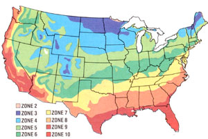

Crisp, frost-nipped leaves crunch underfoot as the fragrance of woodsmoke again fills the air. The tart sweetness of apples is cap tured in cider's amber brew, and the stored boun ty of the garden fills the holiday table. Reflect for a grateful moment on gardens fulfilled, and then turn your thoughts to the everbeckoning promise of next year's harvest.
By this time of year, vegetable growers in Zones 3 and 4 are reduced to pulling a n occasional parsnip or cutting some kale from the bedded-down garden. You folks can toss another log on the fire, negotiate with the cat for space on the sofa, and plan next year's crops.
In Zones 5 and 6 (where the first frosts are due October 10 and 20, respectively), growers can safely transplant two garden perennials, asparagus and rhubarb, until the third week of November (do your digging before the ground freezes solid, though). Year-old asparagus roots should be planted about a foot apart in footdeep trenches. Cover the roots with several inches of compost-enriched soil, and gradually, as the plants grow, till in the rest of the trench.
Rhubarb roots can be spaced from two to four feet apart and set so that the crowns are two to three inches below the surface of the soil.
Don't harvest either asparagus or rhubarb at all during the first season of growth . . . let the plants build up a healthy, extensive root system. A light harvest is possible in the second year, and after that you should be able to cut the stems for up to eight weeks annually.
In Zones 7 (frost by November 1) and 8 (freezing weather commencing about the 15th), only the very hardy greens like corn salad and cress stand a chance of producing at this late date in unprotected ground . . . but gardeners who use cloches or cold frames can still raise a respectable crop of leaf lettuce, mustard greens, or spinach. To learn how to build an easy-to-store knockdown cold frame, see the article by Peter Wotowiec and Clarence Kinkelaar in MOTH ER NO. 55, page 54. (Back issue ordering information is on page 52.)
Zone 9 gardeners, who face frost around December 1, can still grow many greens: cabbage or collard transplants, and-from seed-endive, kale, kohlrabi, leaf and head lettuce, mustard, and spinach. In addition, you might have luck with late crops of carrots, radishes, turnips, beets, and peas (if you get 'em in early).
The fortunate folks in balmy Zone 10 will find the weather cool enough now to plant a winter crop of garden peas. Along with those tasty green globes, you can also sow string beans, broccoli, brussels sprouts, and cauliflower . . . and all of the vegetables listed for Zone 9. Imagine: fresh peas for Christmas!
In most parts of the country, this is the time of year that nutritious, mineral-rich fertilizer falls to earth free. Yet (it's hard to believe) some folks actually pay others to haul all that garden goodness away to the dump. These heavenly gifts, of course, are leaves . . . and it's a snap to compost na ture's annual gift into a rich soil amendment that will both add nutrients and improve filth. The key to quick, effective composting is to increase the amount of surface area available to those workhorse bacteria . . . and the way to do that is to shred those sheddings. Just rake the leaves into foothigh piles, and then chop them up line with several passes of a rotary lawn mower.
To construct the compost heap, alternate six-inch layers of diced leaves with one-inch layers of soil (to provide the bacteria). Since this late-season compost pile won't have any ni trogen-from rich green organic matter-in it, you'll also need to add some of that nutrient. An ideal compost heap has a 30:1 carbon/nitrogen ratio, and you can approximate the proportions by incorporating about a pound of blood meal to each two bushels of leaves. If you have a source of manure, a leaf-to-manure ratio of 5:1 (by volume) should do the trick, as well.
After you've constructed the pile, water it thoroughly and cover it with a piece of black plastic. Then, every month or so, remove the plastic and turn the mound with your garden fork. By the time spring planting comes, you should have a heap of goodness for your garden.
A few months back, we told you about a new method of composting that greatly speeds up the breakdown of the organic material. Well, we've been unable to reach our original Canadian source for more details of this good news, but a company in Delaware is currently selling the special Du Pont Tyvek felted plastic bags used in the process. You can order five Post Haste Tyvek bags for $8.95 postpaid from Forenco, Dept. TMEN, P.O. Box 9088, Wilmington, Delaware 19809.
|
 |
|
|